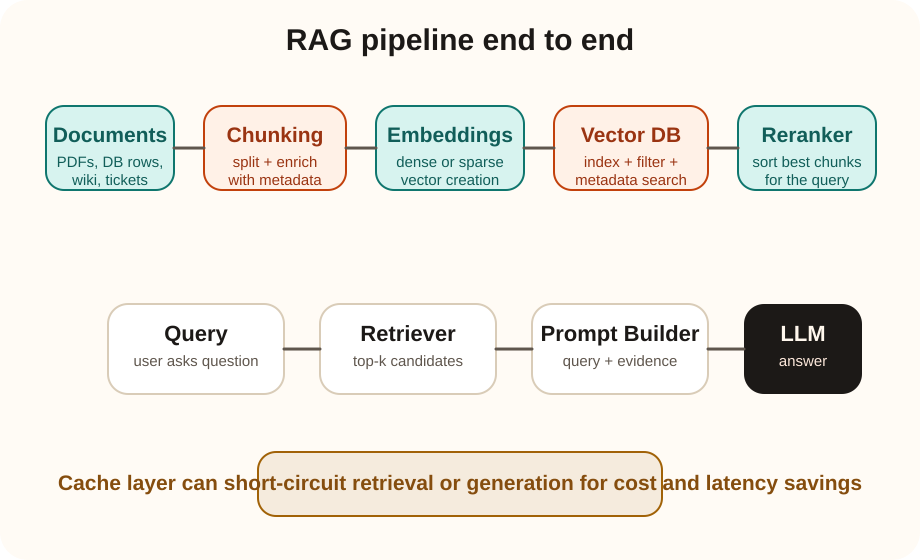

Systems track
Retrieval Augmented Generation end to end
RAG is a pattern where an application retrieves relevant external knowledge first and then gives that evidence to the LLM during generation. The model does not answer only from static pretraining weights. It answers using retrieved context.
The practical value is simple: RAG helps ground answers in your own data, reduce hallucinations, avoid frequent model retraining, and keep enterprise knowledge current.
Core flow
documents -> chunk -> embed -> index -> retrieve -> rerank -> prompt -> LLM answer
What RAG solves
If your model needs up-to-date private or domain-specific knowledge, relying only on base-model weights is usually not enough. RAG connects the model to external evidence at query time.
What RAG is not
RAG is not fine-tuning. Fine-tuning changes model behavior or style. RAG injects fresh context during inference without changing model weights.
| Advantage | Why it matters |
|---|---|
| Fresh knowledge | You can update the corpus without retraining the model. |
| Better grounding | Answers can be tied to retrieved evidence instead of pure model memory. |
| Enterprise safety | You can constrain the answer to approved internal documents. |
| Lower retraining burden | You do not need full fine-tunes every time documents change. |
| Explainability | You can show which chunks or sources were used. |
Storage layer
Choosing the vector database based on requirement
| Need | Likely fit | Why |
|---|---|---|
| Managed SaaS and fast startup | Pinecone, Weaviate Cloud | Less ops overhead, easy production start. |
| Open-source self-hosting | Qdrant, Weaviate, Milvus | Good when you need control and infra ownership. |
| Already invested in Postgres | pgvector | Good for moderate scale and simpler architecture. |
| Hybrid keyword plus vector search | Elasticsearch, OpenSearch, Weaviate | Strong when lexical matching matters along with semantics. |
| Very high scale ANN search | Milvus, Qdrant, Pinecone | Better ANN support and operational tuning. |
| Developer prototyping | Chroma, FAISS | Fast to start, but not always ideal as production infrastructure. |
| Low-latency cache-like retrieval | Redis with vector support | Useful when retrieval and cache patterns overlap. |
Practical rule: choose by scale, filtering needs, hybrid search support, latency target, ops model, and existing stack familiarity. The “best” vector DB is highly workload dependent.
Retrieval representation
Dense vs sparse vector creation in RAG
Dense embeddings
Dense embeddings map text into compact continuous vectors where semantic similarity is captured even when exact words differ.
- Strong for semantic meaning and paraphrases.
- Good when users ask natural-language questions that may not share exact wording with source documents.
- Very common in modern RAG systems.
Sparse embeddings
Sparse representations emphasize exact term importance or lexical signals, often behaving closer to learned keyword weighting or BM25-style retrieval.
- Strong for exact phrase, keyword, and identifier matching.
- Useful when product names, codes, legal terms, or medical terminology matter heavily.
- Often better when exact wording is more important than broad semantics.
| Aspect | Dense | Sparse |
|---|---|---|
| Main strength | Semantic similarity and paraphrase understanding. | Exact lexical matching and token-level precision. |
| Best for | Natural language questions over conceptual content. | Identifiers, product SKUs, legal clauses, logs, exact terms. |
| Main weakness | May miss exact rare keywords or underweight exact codes. | May miss semantically similar phrasing that uses different words. |
| Typical use | General semantic retrieval. | Keyword-heavy or exact-match retrieval. |
When dense is advantageous
If a user asks, How do I reduce latency in a retrieval system? and the source document says optimize end-to-end query response time, dense retrieval can still connect them even though the wording differs.
When sparse is advantageous
If a user asks for a specific product code like ABX-4417, sparse retrieval usually has an advantage because exact token matching matters more than semantic similarity.
What should you use?
Use dense retrieval when semantic meaning is the main signal. Use sparse retrieval when exact wording is critical. In many production RAG systems, the strongest answer is hybrid retrieval, where dense and sparse scores are combined so you get both semantic recall and exact-match precision.
Practical advice: if your corpus contains codes, product names, legal references, medical terms, ticket ids, or logs, do not rely only on dense embeddings. Use sparse or hybrid retrieval.
Common indexing strategies
- Flat / brute force: most accurate, expensive at scale.
- HNSW: very common ANN choice with strong latency-recall tradeoff.
- IVF Flat: cluster-first search, good for large collections.
- IVF PQ / product quantization: compress vectors for large-scale memory efficiency.
- Hybrid dense + sparse: combine embeddings with BM25 or keyword signals.
How to decide
- Use flat search only for small corpora or evaluation baselines.
- Use HNSW for many practical production use cases.
- Use IVF or quantization methods when scale is large and memory matters.
- Use hybrid indexing when exact terminology matters, such as product codes, legal clauses, or medical terms.
Retrieval quality
Chunking strategies and ideal chunk size
| Strategy | How it works | Best use |
|---|---|---|
| Fixed-size token chunks | Split every N tokens with optional overlap. | Simple baseline and large uniform corpora. |
| Sentence or paragraph chunking | Split on natural boundaries. | Human-readable documents where local coherence matters. |
| Recursive chunking | Try headers, then paragraphs, then sentences, then tokens. | General-purpose document pipelines. |
| Semantic chunking | Split where topic changes significantly. | High-quality knowledge bases and long-form documents. |
| Parent-child chunking | Retrieve small child chunks but keep larger parent context. | Useful when precision and broader context both matter. |
| Sliding window overlap | Each chunk overlaps nearby text. | Reduce boundary loss when answers cross chunk edges. |
Ideal chunk size is not universal
There is no single best chunk size. For many practical RAG systems, a first reasonable range is roughly 200 to 500 tokens with some overlap, then tune from there.
Practical tuning rule
Use smaller chunks when precision matters and answers are local. Use larger chunks when context is distributed across paragraphs. Always evaluate recall, answer quality, and token cost together.
What reranking is
The retriever first finds a set of candidate chunks, often top-k by vector similarity. A reranker then scores those candidates more precisely against the query and reorders them.
Why reranking is required
Dense retrieval is fast, but similarity search alone may not return the best evidence ordering. Reranking improves precision so the LLM sees fewer but better chunks.
Typical flow: retrieve top 20 or top 50 candidates cheaply, rerank them with a stronger cross-encoder or ranking model, then pass top 3 to top 8 chunks into the final prompt.

1. Query comes in
Normalize the query and check cache first if your system supports it.
2. Embed the query
The query is converted into the same embedding space as the indexed chunks.
3. Retrieve candidates
The retriever searches the vector DB, often with filters such as tenant, date, or document type.
4. Rerank results
A reranker sorts the most relevant evidence more precisely.
5. Build the prompt
The system includes the user question, retrieved evidence, instructions, and formatting constraints.
6. Generate the answer
The LLM answers using the selected evidence and can optionally cite sources.
Cost control
Model context window and how to use it efficiently
What context window means
The context window is the maximum amount of input and output tokens the model can consider in one request. Retrieved chunks consume that budget directly.
Why this affects cost
More tokens mean higher latency and higher inference cost. Sending too many mediocre chunks is one of the easiest ways to waste money in RAG.
| Technique | Why it helps |
|---|---|
| Retrieve fewer but better chunks | Reduces prompt size without hurting answer quality if reranking is good. |
| Use metadata filters early | Narrows search before generation. |
| Compress context | Summarize or extract only relevant passages before final generation. |
| Use smaller models for retrieval-side tasks | Planner, classifier, or summarizer steps may not need the largest LLM. |
| Cache aggressively | Skips retrieval or generation when possible. |
Latency and cost
Caching in RAG and how to avoid unnecessary LLM calls
| Cache type | What is cached | When it helps |
|---|---|---|
| Query cache | Normalized user query to prior response. | Repeated exact or near-exact questions. |
| Retrieval cache | Query to top-k retrieved chunks. | Skip repeated vector search. |
| Embedding cache | Text to embedding vector. | Avoid recomputing embeddings for repeated content. |
| Semantic answer cache | Cluster of similar questions to approved answers. | Frequently asked stable questions. |
| Chunk cache | Document fragments or parsed outputs. | Large corpora with repeated downstream usage. |
How to hit cache and skip the LLM
- Normalize queries first.
- Check exact cache for deterministic FAQ-like prompts.
- Check semantic cache with similarity threshold.
- Validate freshness rules and access control.
- If cache confidence is high, return the cached answer directly.
Common databases for caching
- Redis for fast key-value and TTL-based caching.
- Postgres for persistent structured cache records.
- Elasticsearch or OpenSearch for searchable response history.
- Vector-enabled stores for semantic cache lookup.
Simple cache-first pipeline
normalize(query)
if exact_cache_hit(query):
return cached_answer
if semantic_cache_hit(query, threshold=0.95):
return cached_answer
chunks = retrieve(query)
top_chunks = rerank(chunks)
if answerable_without_llm(top_chunks):
return templated_or_cached_response
return llm_generate(query, top_chunks)
Quality measurement
How to evaluate a RAG system with RAGAS, DeepEval, and core metrics
What should be evaluated
A RAG system has at least two quality layers: retrieval quality and generation quality. If you only judge the final answer, you can miss whether the retriever failed or the LLM ignored good evidence.
Baseline metric buckets
- Retrieval recall and precision.
- Context precision and context recall.
- Faithfulness or groundedness of the answer.
- Answer relevancy, correctness, latency, and token cost.
| Framework | What it is useful for | What to watch out for |
|---|---|---|
| RAGAS | Popular RAG-focused evaluation framework with metrics such as faithfulness, answer relevancy, context precision, and context recall. | Judge-model scoring is helpful but not perfect. Always spot-check results with human review on important datasets. |
| DeepEval | Useful for LLM and RAG evaluation pipelines, regression testing, and automated quality checks across prompt and workflow changes. | Good for repeatable testing, but you still need carefully curated eval sets and clear pass-fail thresholds. |
| Human review set | Best for business-critical validation, especially when correctness standards are strict or domain-specific. | Expensive and slower, so usually used on high-value golden datasets. |
Strong practice: maintain a small golden evaluation set with known good sources, expected answers, and known failure cases. Use RAGAS or DeepEval for fast iteration, then confirm important changes against human-reviewed examples.
Most useful evaluation split
Measure retrieval separately from generation. If relevant chunks were never retrieved, the fix is usually chunking, indexing, filtering, or reranking. If the right chunks were retrieved but the answer is still wrong, the fix is usually prompt design, model choice, context formatting, or output constraints.
Grounding and safety
How to reduce hallucinations in RAG using CoT, ToT, guardrails, and stronger grounding
First principle
The most effective way to reduce hallucinations is usually not fancy prompting. It is better retrieval, better context selection, and explicit instructions to answer only from evidence. Reasoning techniques help, but they are not substitutes for grounding.
Important distinction
CoT and ToT help the model reason through a problem. Guardrails help constrain behavior and outputs. They solve different parts of the problem.
| Technique | How it helps | Best use |
|---|---|---|
| Grounded prompt with citations | Forces the answer to be tied to retrieved evidence and cite sources or chunk ids. | Default baseline for production RAG. |
| Abstention rule | Tells the model to say it does not know when evidence is missing or weak. | Critical for enterprise and regulated use cases. |
| CoT | Helps multi-step reasoning by encouraging the model to break the problem into steps. | Useful when the answer requires reasoning over multiple retrieved chunks. |
| ToT | Explores multiple reasoning branches before selecting a path. | Useful for hard planning or search problems, but often too expensive for everyday RAG queries. |
| Guardrails | Apply input rules, retrieval checks, schema constraints, forbidden content rules, and output validators. | Useful when correctness, format, or policy compliance matters. |
| Verification pass | Runs a second step to check whether each claim is supported by retrieved evidence. | Useful for high-stakes responses. |
| Query rewriting or decomposition | Improves retrieval by rewriting vague questions or splitting them into smaller sub-questions. | Useful when user queries are broad, ambiguous, or multi-part. |
Prompt shape for grounded answers
You must answer only from the provided context. If the context is insufficient, say: "I do not have enough evidence in the retrieved documents." For every major claim, cite the supporting source id. Do not invent missing facts.
Guardrail flow
validate_input(query)
query = rewrite_if_needed(query)
chunks = retrieve_and_rerank(query)
if evidence_too_weak(chunks):
return abstain()
answer = grounded_generate(query, chunks)
validate_output_schema(answer)
verify_claims_against_chunks(answer, chunks)
return answer
When to use CoT: use it when the answer requires synthesis across multiple pieces of evidence. When not to rely on it: if the retrieved evidence is wrong or missing, CoT will often produce a well-argued wrong answer.
When to use ToT: use it for deliberate search, complex planning, or exploration-heavy agent tasks. For normal FAQ-style RAG, it is usually overkill because latency and cost rise quickly.
Most practical anti-hallucination stack
For most real systems, start with strong retrieval, reranking, citation-based prompting, abstention rules, and output validation. Add CoT selectively for multi-hop reasoning. Add ToT only when the task is genuinely search-heavy and the extra cost is justified.
Production setup
How to build the full RAG pipeline
1. Ingestion pipeline
Load documents, clean text, attach metadata, and chunk content carefully.
2. Embedding and indexing pipeline
Create embeddings, choose the vector index strategy, and store chunks with metadata.
3. Online retrieval path
Query normalization, cache check, vector retrieval, filtering, and reranking happen here.
4. Prompt assembly path
Only the most useful evidence should go to the LLM. Keep prompts tight for cost control.
5. Answer and feedback loop
Return the answer, optionally cite sources, log retrieval quality, and use offline evaluation to keep improving chunking and reranking.
Good RAG is not just vector search. In practice, quality usually comes from the combination of chunking, filtering, reranking, prompt design, caching, and evaluation.
Interview readiness
Questionnaire and scenarios
How do you choose chunk size in RAG?
I start from the document structure and expected answer granularity, then evaluate retrieval recall, answer quality, and token cost together. There is no universal best size, though 200 to 500 tokens is often a useful first range.
Why is reranking often worth the extra step?
Because cheap retrieval gives broad recall, but reranking gives better precision. That means fewer irrelevant chunks enter the prompt, which improves quality and reduces cost.
Your RAG system is accurate but too expensive. What knobs do you turn first?
Reduce prompt bloat, lower top-k after reranking, add metadata filters, introduce answer or retrieval caching, and compress context before final generation.
Users say answers feel grounded but miss exact product codes. What would you inspect?
I would inspect hybrid retrieval, lexical search support, chunk granularity around structured codes, and whether reranking is overfavoring semantic similarity over exact match.
Action plan
Next steps if you want to build a good RAG system
1. Start with a simple baseline
Use recursive chunking, dense embeddings, a practical vector store, and top-k retrieval. Measure answer quality before adding complexity.
2. Add metadata filters and evaluation
Track retrieval relevance, answer groundedness, latency, and token cost. Do not tune blind.
3. Add reranking if retrieval quality is noisy
Reranking is often the first major quality improvement after a baseline dense retriever.
4. Add hybrid retrieval if exact terms matter
If your data contains ids, product codes, legal references, or log strings, combine dense and sparse retrieval.
5. Add graph-aware retrieval if relationships matter
If answers depend on entities, dependencies, citations, or multi-hop relationships, combine vector retrieval with a graph layer instead of relying only on chunk similarity.
6. Add caching before scaling traffic
Introduce exact, semantic, and retrieval caches early if you expect repeated questions or latency constraints.
7. Optimize prompt size continuously
Keep only the best chunks in the prompt. RAG quality and cost both depend on disciplined context selection.
Most practical rule
Do not begin with the most complex RAG architecture you can imagine. Start with a measurable baseline, then add reranking, hybrid retrieval, and caching only where the metrics show real need.